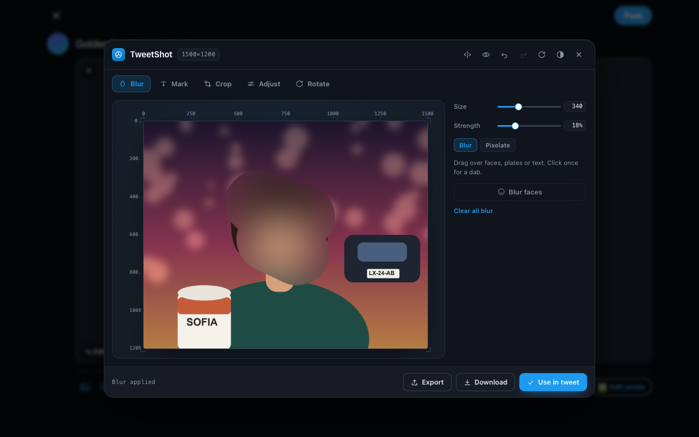
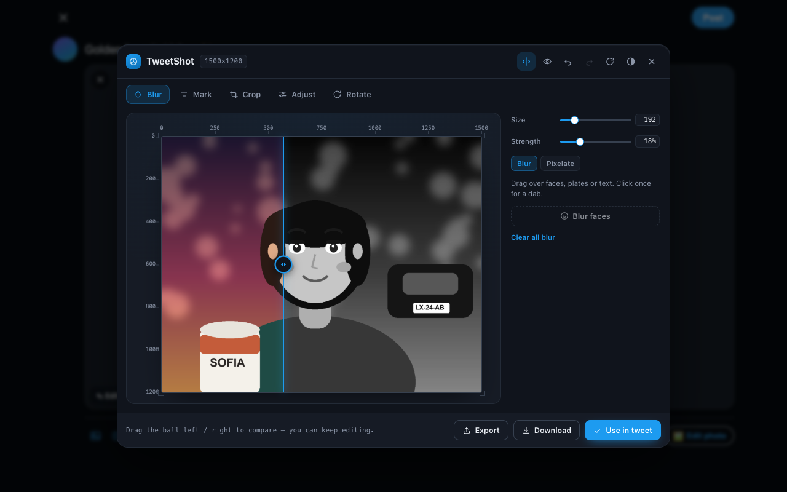
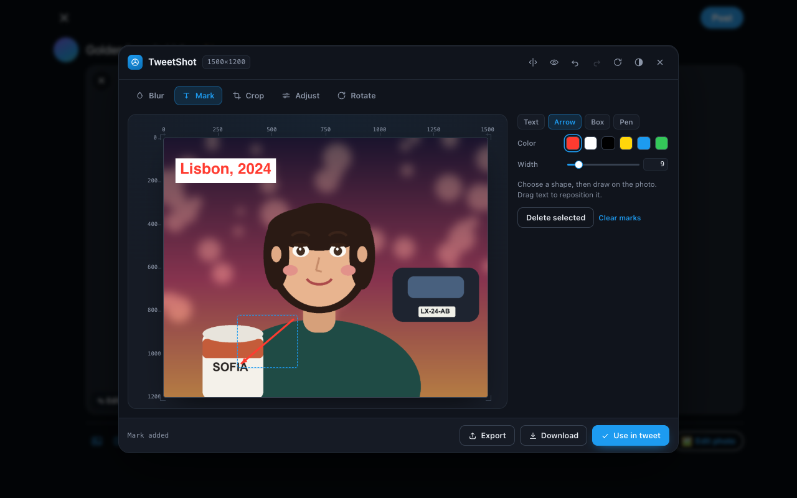
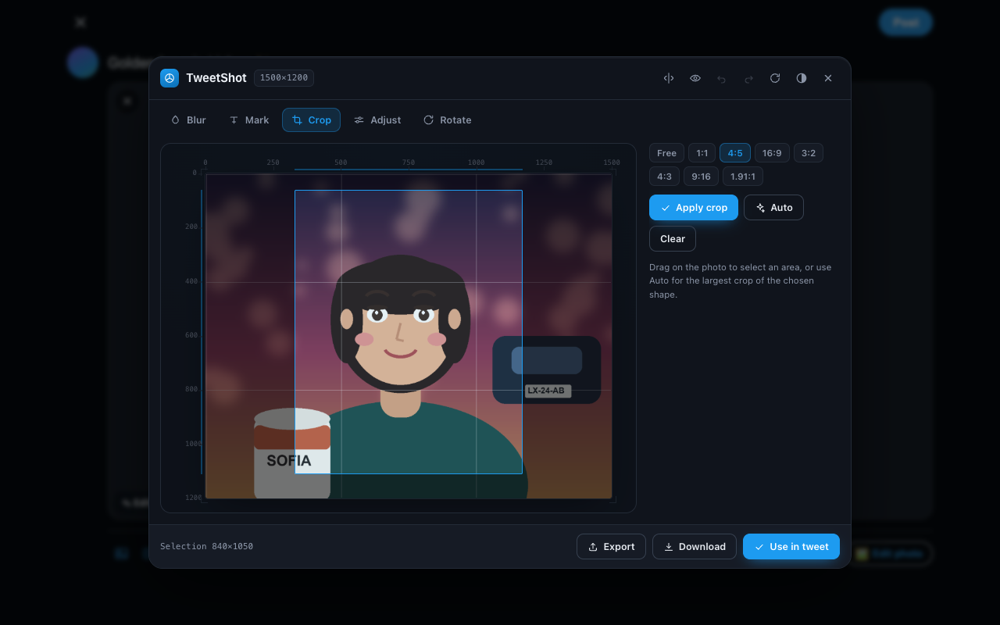
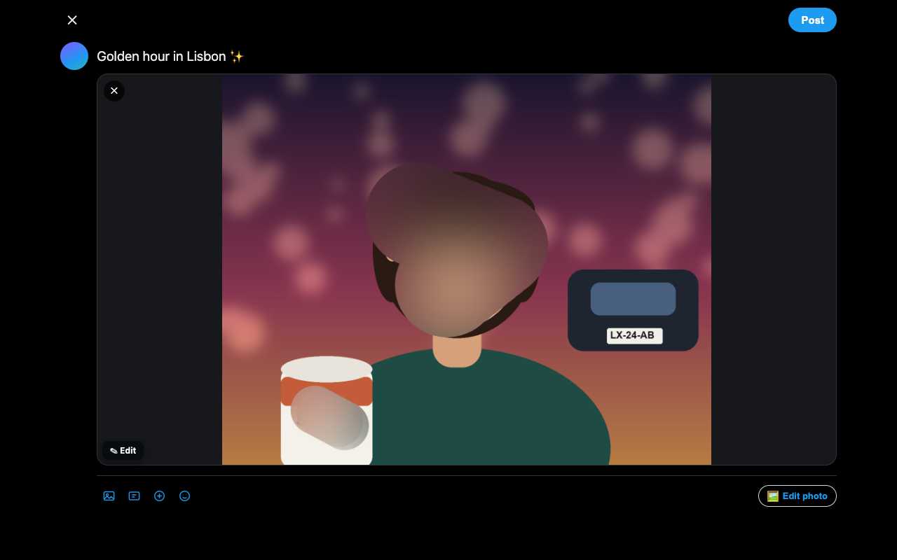
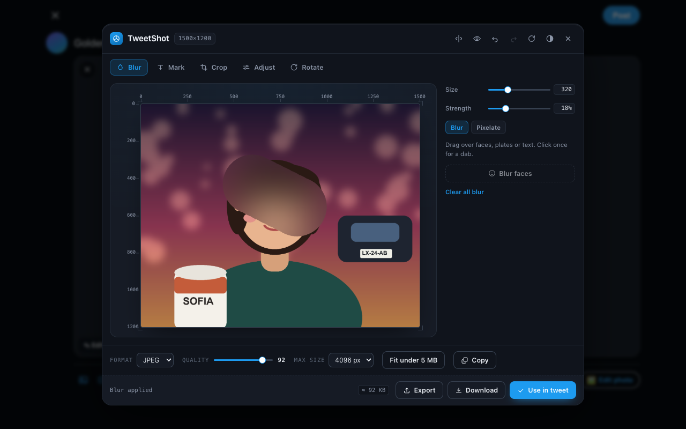

An image editor that lives inside the X/Twitter composer. Blur a face, cover a plate, add a caption, crop — then post. Nothing ever leaves your device.
Free · No account · No uploads · Works in Chrome and Chromium browsers
Every tool exists to get a photo ready for the timeline — and to keep some things private.
A brush for faces, plates and anything else that should not be readable. Size and strength are adjustable, and one click is a single dab.
One-tap detection in browsers that support it — and a clear message plus the brush when they don't.
Text with a background chip, arrows, outline or filled boxes, and freehand drawing. Drag any mark to reposition it.
Free drag plus 1:1, 4:5, 16:9, 3:2, 4:3, 9:16 and 1.91:1. Auto picks the largest crop of the shape you chose; Fit corners trims what straightening leaves behind.
Brightness, contrast, saturation, grayscale, sepia and hue, with presets. Save a look as a recipe and reuse it on the next photo.
Drag a divider for a real before/after, or view side by side — and keep editing while you compare.
A live file-size estimate and one-click “fit under 5 MB”, so a photo is never rejected for being too large.
Select several photos, edit them one at a time, and drop them all into the composer together. Cancel and your originals are handed back.
Recorded from the real extension running on x.com.






It is a privacy tool. It would be strange if it phoned home.